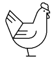
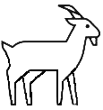
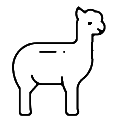
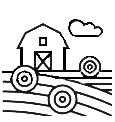

Down on the Farm Gala 2022
Meet Josh & Jenny Kaurich and learn about the 2nd annual Down on the Farm Gala in Brooklyn, WI benefitting Living Water International!
Buy Tickets/Sponsor
Mission
Our focus is simple and direct: Raise money and awareness for a great cause, Living Water International (LWI), all while having a good time doing it. Many of our brothers and sisters throughout the world do not have access to safe water and proper sanitation systems. The water crisis is truly a health crisis and is all of our responsibility to bear. Nearly 1 million people die each year from water, sanitation and hygiene-related diseases which could be reduced with access to safe water or sanitation. Let’s work together to solve this problem.
The Down on the Farm Gala has been working with LWI to identify $100,000 in stretch projects in critical needs areas. These project are relying on our gala to get funded. With your help we can make them shovel ready this fall!
Click here to learn more about the individual projects
The Event
September 10, 2022
381 Union Road Brooklyn, WI 53521
Time: 4:00 pm to 10:00 pm
4:00 to 6 pm is acoustic music, drinks, and silent auction, lawn games
6 pm to 8 pm is dinner, program, and keynote speaker [Current President and CEO of LWI: Michael Mantel]
8 pm to 10 pm live band and good times
Style: Business casual to formal wear if desired (Shorts and Polo are fair game!)
Come and join us for a night of fun, entertainment, and charity at the Down on the Farm Gala event where all money raised will go to support water and sanitation projects for Living Water International.
The Cause
Since 1990 Living Water International has completed nearly 20,000 water projects throughout the world! LWI exists to demonstrate the love of God by helping communities acquire desperately needed clean water, and to experience “living water”—the gospel of Jesus Christ—which alone satisfies the deepest thirst. Through their holistic partnerships with in-country staff, local churches, and community leaders, LWI helps to provide sustainable, safe water access, improved hygiene behaviors, and implemented sanitation infrastructure to meet each regions unique needs.
Quick Facts
- Nearly 1 million people die each year due to a lack of safe drinking water
- 770 million people lack access to safe water
- 1 in 5 children lack access to safe water services
- Women spend 200 million hours each day collecting water
To learn more visit: www.water.cc

About Us
The Down on the Farm Gala is an annual event that is used as a tool to raise money and awareness for worthy causes we feel called to come alongside. In particular, we have a special spot in our hearts for the poor and vulnerable. Our goal at each event is to raise $100,000 and have a fun time in the process.
The gala is funded by our family through our day jobs such that all money raised at the event can be donated to the organization being promoted.
The concept started as a dream in 2019 when our family purchased a farmette outside of Brooklyn. The property the event is hosted on has a rich history of farming and family that goes back to 1870. From the onset, we envisioned the property to be a blessing for not just our family but our community as well.
Donate to the Event
We have a few entertaining and fun ways to donate to the cause via the gala. We will be hosting a silent auction where bidding will be conducted via a phone app which will open the day of the event. For bigger ticket items we will auction off the items in a competitive forum on September 10th. We will also have lawn games that you can pay to play and will have a general ask at the end to help us meet our financial goal to fund the stretch projects.
Sponsorship
Please consider being a business sponsor for this event. All the money raised will go towards this worthy cause and you will be honored and recognized the evening of the event. Title Sponsors will get website, email, and social media exposure prior to the event. Our seating is limited to 150 people so please get your seats today before they sell out.
To sponsor via an NCF account or a check to Living Water International, please send an email to the address far below and I will provide you instructions on how to direct your payments. We will manually add you to our system thereafter.
| Level Name | Amount | Tickets Provided |
|---|---|---|
| Chicken | $350 | 2 |
| Goat | $650 | 4 |
| Alpaca | $1,200 | 8 |
| Title Sponsor | $5,000 | 8 |
Contact
To learn more about this event contact Josh at 608-333-6080 or email at joshuakaurich@gmail.com.